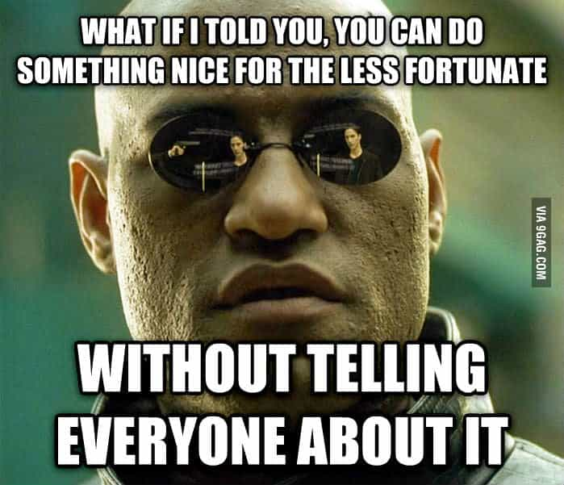

< < < Back
3 Ways Women Show Their Narcissism On Social Media – Return Of Kings
The advent of social media has given rise to millions of new opportunities for women to find desperately needed attention. This phenomenon has expanded so greatly in recent years that we have become accustomed to seemingly every woman using downward-looking Facebook and Instagram photos to present their cleavage for an online audience. The excuse is usually that they are showcasing a new dress or top. Many uninitiated men are so habituated to this new form of sluttery that they forget it’s actually all about attention-seeking. Instead, they see it as a “cultural” expression of modern femininity.
Yet many methods women use to get male (or female) eyes to look at them or care about them are not so obvious. Not every issue can be shared with their Facebook friends or Instagram followers, or must be shared sparingly. In fact, despite attention-seeking being most associated with trying to capture as many admirers or viewers as possible, the worst examples of it often occur in either small groups or one-on-one.
The kinds of attention-seeking I explore below should serve as examples for you to make decisions about the kinds of girls you spend time with. Some, like coworkers, will be harder or perhaps impossible to get rid of. If this is the case, you simply know to be careful around them, creating space where possible. So, here we go:
1. Family death or personal tragedy attention-seeking
Why is everyone suddenly so vocal about their family relationships after family members die? Because of all the perks and advantages people get from “grieving”! Some girl barely called her grandmother once a month, let alone visited her 45 minutes away, but when the old woman died, ¡voila¡, instant sympathy from others!
I have seen this pattern repeat itself again and again. Old family members especially were treated as burdens to be endured by girls I have known, unless they could expect to receive financial gratuities while relatives were alive or after they had died, or if ancillary benefits like attention could be derived from their illness or death.
Totally unexpected deaths, like most of a family dying in a media-covered jetliner crash, are so rare as to be almost meaningless for the vast majority of the population. Instead, girls who court attention by way of family tales of woe are forced to use events they themselves predicted but practically-speaking ignored. Poor grandma or grandpa spent five years with terminal cancer or using an oxygen tank, yet their death really was a shock! And now they deserve your carnations, coffee-dates, invitations to the next weekend party, or something similarly rewarding for them.
If you have known a girl for an extended period of time and, even as a half-close friend, she rarely mentions her family or the time she spends with them, tears after a relative’s death are most likely crocodile ones. She does not need to have mentioned the particular family member who died, but there needs to be some previous evidence that she takes these relationships seriously. If Aunt Joan, who you’ve never heard of, dies, but she always speaks about visiting her grandparents, her grieving may not be attention-seeking. However, if the sobs come without that sort of history, you’re probably dealing with a narcissist.
You should apply this very healthy skepticism to dead “friend” situations, too. Far too many girls seem to have known the deceased as a lifelong, continual pal when it comes to trumpeting the loss on Facebook or in real-life social gatherings.
2. The gross-out or graphic details approach
This is a general category that includes women who brag about or allude to having unprotected sex with many, many partners (without even the most basic regard for STD tests), girls who talk about scatology or other elements of their bowel movements, and other lovely examples of female depravity. The idea of regressive women wanting to act like men is nothing new, especially in relation to numbers of sexual partners.
To try and cultivate an image of “independent” women, the idea of these women is to shock others so they can garner an audience. Many or most people find them repulsive, but the girls’ truly intoxicating hope is that a small cross-section of people, principally men, will deeply like them for their “honesty.”
A powerful, albeit disgusting illustration of this form of attention-seeking arrived recently in the form of one “Makala” from Toronto. She shared her supposedly “embarrassing” story of going to a man’s house and “having to” put a piece of her own excrement in her handbag because his toilet would not flush. Interspersed within the tale were desperate self-appeals to her ego, such as “All of the hard work I put into being a hot girl is tarnished by one teeny tiny poop story. Now I’m just the poop girl.” So tarnished she decided to share it with the Twitter world!
The girl claims to have received a huge amount of non-fake positive male attention afterwards, which, if true, proves that women behave this way expecting rewards to follow.
I know what some of you are thinking: “Do you think we’re idiots, David? Of course we know not to associate with girls who talk about their bowel movements!” Yet the threshold starts a lot lower than this. A woman who goes into graphic, non-romantic detail about the last man/men she slept with is also a part of this category. She has taken up the belief that she should act like a man with breasts. Instead of it being normal to talk about this, it is for the purposes of attracting attention and projecting themselves as desired objects of male lust.
Most young women are constantly fretting over their value in the sexual marketplace, more so as they age. Detailed stories about sexuality and related matters are just vehicles for convincing people of how “good” they are.
3. Humblebragging

This is a style of attention-seeking best illustrated by a clear example: “I won 2nd place at the hairdressing contest and it’s so, so unfair!” A woman who says this is trying to use what she thinks is an acceptable way to brag about being the first runner-up. Many women are more discreet with their humblebrags, which are still anything but humble.
The general principle is that what a woman received for some specific event or in life generally is not enough, she feels bad, and she wants to arrange an opportunity for others to praise her or simply think about her more in the future. It extends to acts of “charity” as well, with women cloaking their publicly declared donations or deeds in lamentations that the experience of seeing the suffering of the needy traumatized them.
Even showing non-made-up appearances is now an opportunity for women to exhibit narcissism and humbebrag. As females have become more and more aware that their “beauty” rests on the illusion of camera filters, make-up and other tools, “make-up-less selfies” have become all the rage with narcissistic girls.
On the one hand, the fad presents women as being fine with their flaws and open to appearing vulnerable. In reality, it is all about fellow women or men “reminding” them about how naturally beautiful they apparently are, even to the point of being more beautiful without make-up. If the craze was really about honesty in appearances, the women would take make-up less photos in the park, on dates, and at birthday parties, all without the fanfare of telling people they’re not wearing product.
The problem with humbebragging is that it only gives a temporary, superficial lift to the woman’s flagging self-esteem. Like a meth addict requiring progressively higher doses, she will expect more and more flattery to come her way. So it is better to never step on the merry-go-round of appealing to an emotionally broken woman’s vanity. Your best bet is to totally avoid any woman whose words and actions serve as a perpetual half-finished sentence that she wants you to complete with an epic ballad about her magnificence.
How will you get these women out of your life?
If all I have done here is alert you to some of the common mechanisms used by women for courting attention and helped you to navigate them, my job is done. And, very importantly, you should not restrict yourself to these three. There are plenty of others and also a multitude of carefully planned borderline actions that the more skilled female manipulators engage in.
In addition, knowing the tactics of such women enables you to start to outfox them at every turn. If you were unfortunate enough to marry a girl like this, have a child with her, or just got into a relationship with a standard issue succubus, do not despair. Begin to take the steps to remove yourself from the situation. And the starting point for this is recognizing the attention-seeking behavior.
I would wish you luck, but it’s never about luck. Tally-ho, gentlemen!
Read More: Soon You Will Be Able To Have Sex Over Social Media